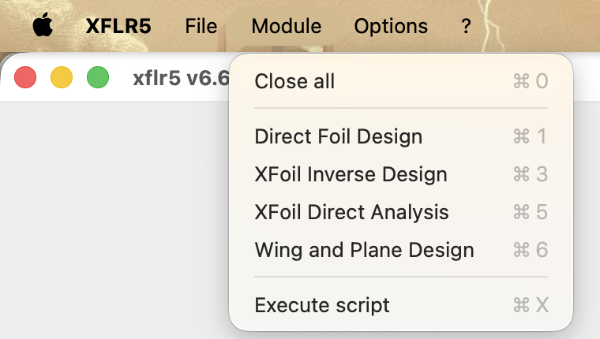
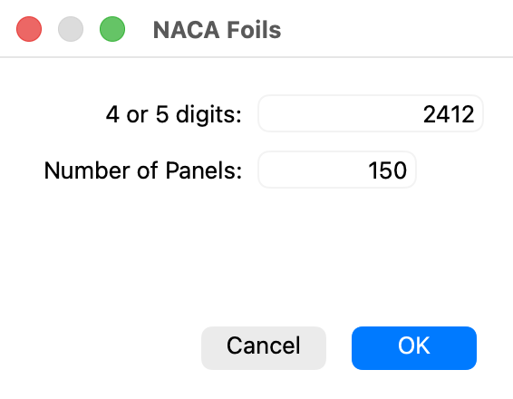
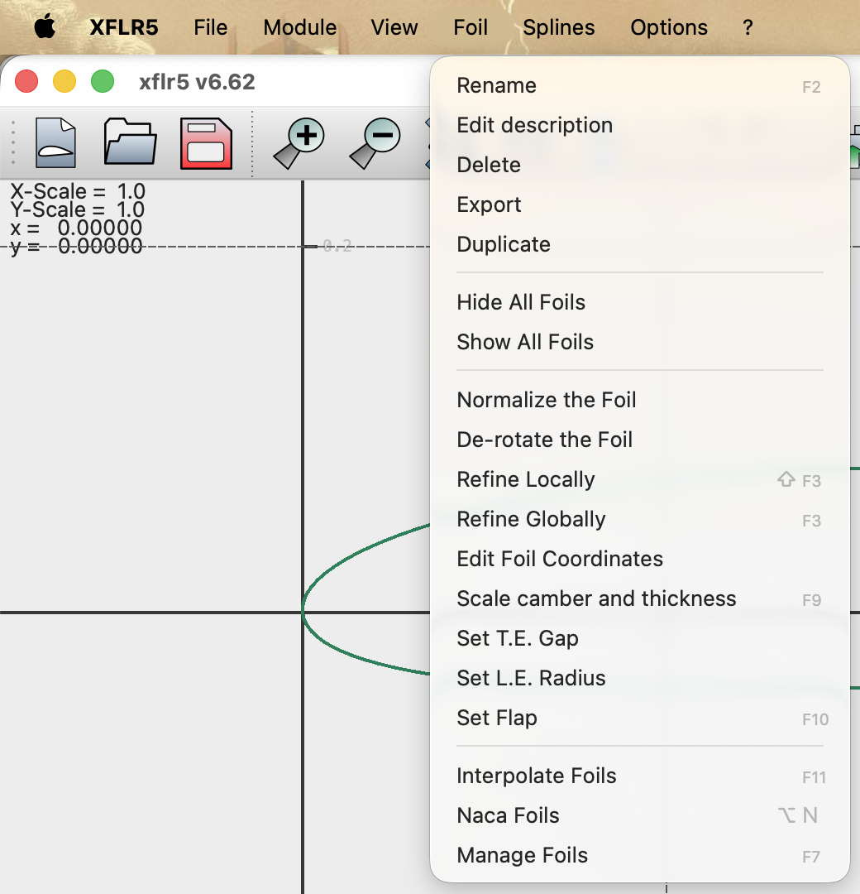
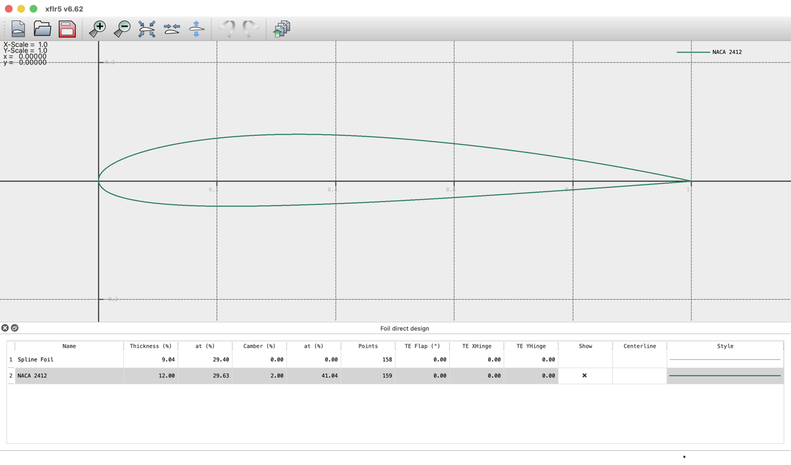
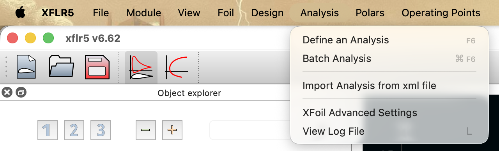
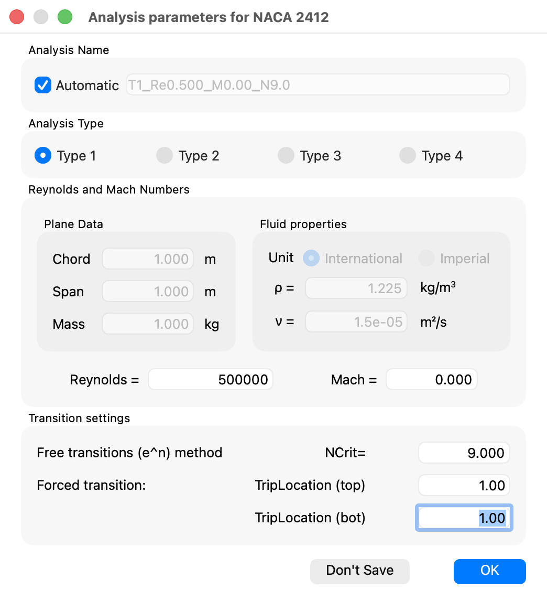
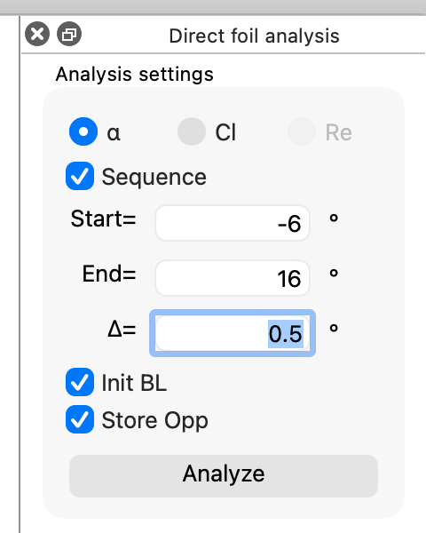
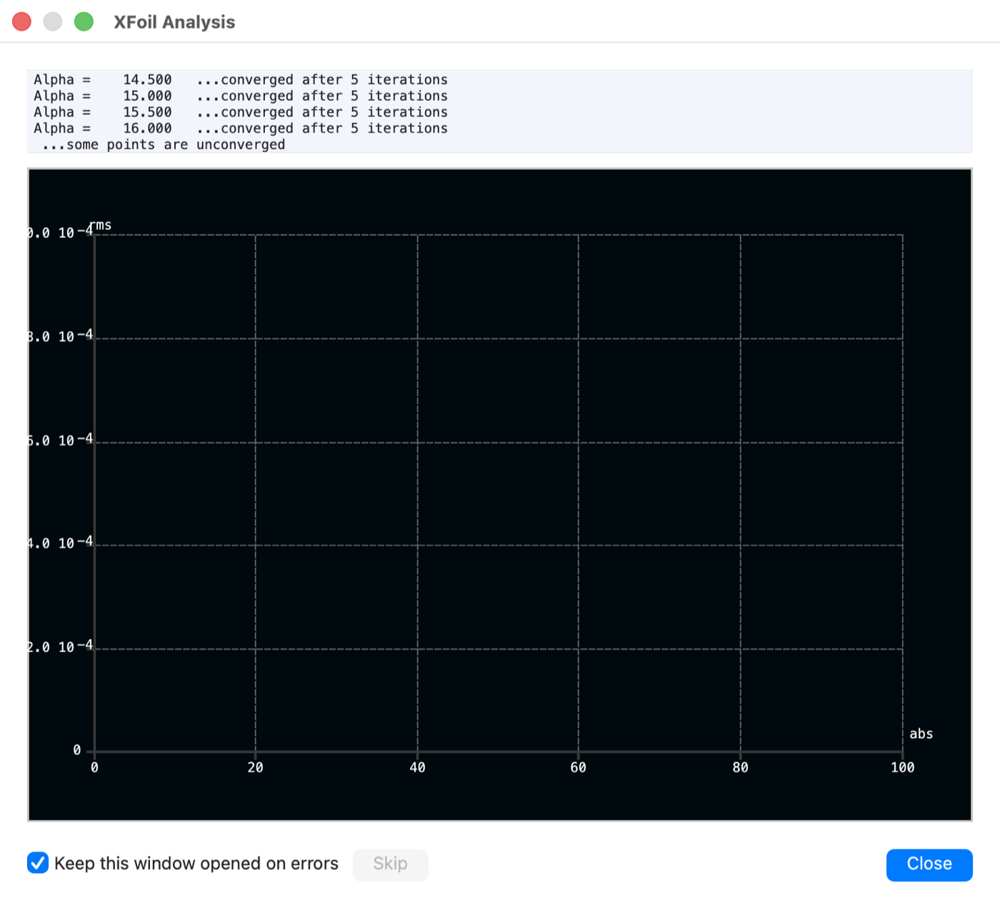
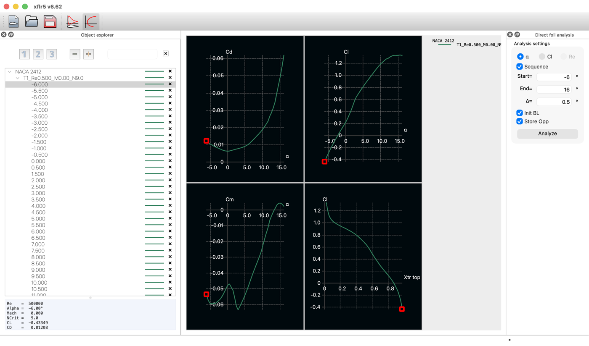
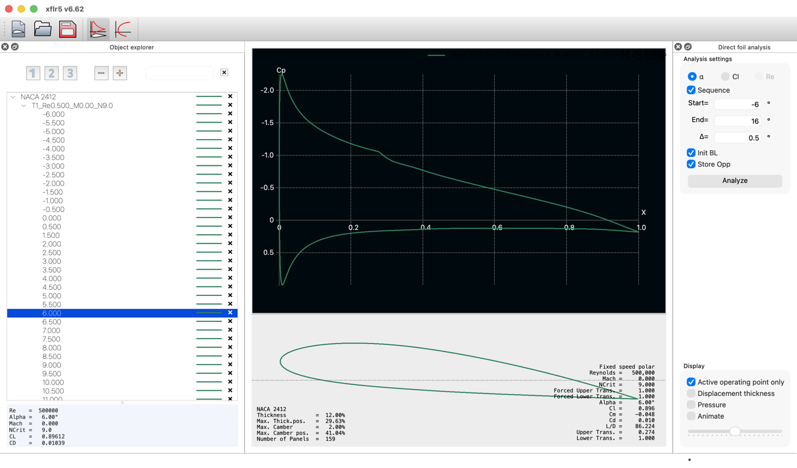

The complete two-dimensional procedure — loading the geometry, defining a viscous analysis and running an angle-of-attack sweep — followed by the reading of the polars and of the pressure distribution the program returns.
XFLR5 · Tutorial 1.1
Análisis de un perfil alar
El procedimiento bidimensional completo —cargar la geometría, definir un análisis viscoso y ejecutar un barrido de ángulo de ataque— y, a continuación, la lectura de las polares y de la distribución de presión que el programa devuelve.
XFLR5 · Tutorial 1.1
Analyse eines Tragflügelprofils
Das vollständige zweidimensionale Vorgehen — Geometrie laden, viskose Analyse definieren und Anstellwinkel-Durchlauf ausführen — und anschließend das Lesen der Polaren und der Druckverteilung, die das Programm liefert.
Estimated reading: 45 minLectura estimada: 45 minLesedauer: ca. 45 minLevel: undergraduateNivel: licenciaturaNiveau: BachelorVerified on XFLR5 v6.62Verificado en XFLR5 v6.62Geprüft mit XFLR5 v6.62
Full English translation in preparation. Each section below carries a summary of its content; the complete text, figures and tables are available in the Spanish version, which the ES button above selects.
Load an airfoil by either route, define a viscous analysis, run an angle-of-attack sweep, read the four polars and the pressure distribution, and know the interval in which the results carry physical meaning.
About the program version. The XFLR5 project was closed on 30 June 2026: version 6.62, on which this guide was verified, is the final release. Development continues in flow5, presented as version 7 of XFLR5 and open source since 1 January 2026. The series stays with XFLR5 for two reasons: a frozen program keeps these instructions valid, and XFLR5 was developed for model-scale aircraft, which is the scale of the examples. Version 6.62 for Windows and macOS remains available on SourceForge.
The method
Two models solved in a coupled way
In two dimensions XFLR5 is a graphical front end to XFoil: a linear-vorticity panel method for the outer potential flow, coupled through the displacement thickness to a two-equation integral boundary layer, with transition predicted by the \(e^{N}\) criterion. There is no volume mesh, no discretised Navier–Stokes and no turbulence model.
Scope and limits
Where the results carry physical meaning
The single criterion that bounds the method is how far the boundary layer remains thin and attached. Trustworthy for attached flow at \(10^{5} < Re < 10^{7}\); unreliable below \(Re = 5\times 10^{4}\) and beyond \(C_{l,\max}\); outside its scope for shock waves and for finite wings.
Orientation
The map of the interface
XFLR5 opens on an empty window because no module is selected yet. Modules live under the Module menu, not under File: ⌘1 for Direct Foil Design and ⌘5 for XFoil Direct Analysis. The airfoil list is shared by the whole project, which is stored in a single .xfl file.
Step 1
Loading and preparing the airfoil
Two routes: generate a NACA section from its analytical definition, or load a .dat file in Selig or Lednicer format. Either way, normalise the chord, refine the panelling to 150–200 panels and close the trailing-edge gap before analysing. Note that these commands sit under Foil in Direct Foil Design but under Design in XFoil Direct Analysis.
Step 2
Defining the analysis
Every field of the analysis dialogue fixes a physical hypothesis: the analysis type sets which quantity stays constant along the sweep, the Reynolds number is built on the chord and never on the span, and \(N_{\mathrm{crit}}\) describes the turbulence level of the stream rather than the airfoil. Note that the program defaults to \(\nu = 1.5\times 10^{-5}\ \mathrm{m^2/s}\).
Step 3
Running the angle-of-attack sweep
Sweep from \(-6^\circ\) to \(16^\circ\) in steps of \(0.5^\circ\), with Store Opp always ticked: it is the option that keeps every operating point with its local data. When a point fails to converge, reduce the step, tick Init BL, refine the panelling, or accept that the failure marks the limit of the method.
Step 4
Reading the polars
Four graphs, four questions, four contrast values: the lift slope against the thin-airfoil \(2\pi\), the minimum drag coefficient against its expected order of magnitude, the maximum efficiency obtained by tangency from the origin, and the quarter-chord moment against the wind-tunnel value. The drag polar \(C_d\)–\(C_l\) is not among the default variables.
Step 5
The pressure coefficient distribution
With \(C_p = 1 - (V/V_\infty)^2\), the distribution is a map of local velocity. Five features carry the physics: the stagnation point at \(C_p = +1\), the suction peak, the transition location, the adverse gradient that decides separation, and the Kutta condition closing both branches at the trailing edge.
Suggested practice
Symmetric airfoil against cambered airfoil
Analyse the NACA 0012 and the NACA 2412 under identical conditions —Type 1, \(Re = 5\times 10^{5}\), \(M = 0\), \(N_{\mathrm{crit}} = 9\)— and explain the differences from the geometry of each. Suggested practice, not an assignment.
Key values
The five figures that verify a run
Contrast values for the NACA 2412 at \(Re = 5\times 10^{5}\): \(a_0 \approx 0.11\) per degree, \(\alpha_{L=0} \approx -2.1^\circ\), \(C_{m,c/4} \approx -0.05\), \(C_{d,\min} \approx 0.007\). The documented run returns \(C_L = 0.896\) and \(L/D = 86.2\) at \(\alpha = 6^\circ\).
Common mistakes
Errors of interpretation that invalidate a run
Seven errors of interpretation, each stated with the claim, the reason it sounds plausible and the correction. The most expensive: building the Reynolds number on the span, comparing airfoils at different \(Re\), plotting beyond \(C_{l,\max}\), running without Store Opp, and taking the minimum-drag point for the point of maximum efficiency.
Sources
References
Drela, M. «XFOIL: An Analysis and Design System for Low Reynolds Number Airfoils», en Low Reynolds Number Aerodynamics. Berlín: Springer, 1989. Artículo original en que se describe el método implementado.
Deperrois, A. Guidelines for XFLR5 y Analysis of foils and wings operating at low Reynolds numbers. Documentación oficial del programa.
Abbott, I. H. y von Doenhoff, A. E. Theory of Wing Sections. Nueva York: Dover, 1959. Definición de las series NACA y polares medidas en túnel.
Anderson, J. D., Jr. Fundamentals of Aerodynamics, 6.ª ed. Nueva York: McGraw-Hill Education, 2017, capítulo 4.
Screenshots taken from XFLR5 v6.62 on macOS. The numerical values come from the run documented in figures 9 and 12, carried out for this guide, except figure 11, which is drawn from the exported polar of the same airfoil under the same conditions; the contrast values were recomputed from thin-airfoil theory. The next tutorial, 1.2, completes the work on the airfoil with batch analysis and the geometry tools.
Objetivos de aprendizaje
Qué se debe poder hacer al terminar
Esta guía recorre el análisis bidimensional de un perfil alar en XFLR5, desde la carga de la geometría hasta la interpretación de los resultados. Al terminarla debe ser posible:
Cargar la geometría de un perfil por cualquiera de las dos vías del programa y prepararla para el cálculo.
Definir un análisis viscoso declarando de forma consciente el tipo, el número de Reynolds, el número de Mach y el factor \(N_{\mathrm{crit}}\).
Ejecutar un barrido de ángulo de ataque y diagnosticar los puntos que no convergen.
Extraer de las polares la pendiente de sustentación, el ángulo de sustentación nula, el coeficiente de momento y la eficiencia máxima, y contrastarlos con la teoría de perfil delgado.
Leer una distribución de coeficiente de presión y localizar en ella el estancamiento, el pico de succión, la transición y el gradiente adverso.
Reconocer el intervalo en que los resultados admiten interpretación física y truncar la curva donde corresponde.
Sobre la versión del programa. El proyecto XFLR5 se cerró el 30 de junio de 2026: la versión 6.62, con la que se verificó esta guía, es la última y ya no recibirá cambios. El desarrollo continúa en flow5, que se presenta como la versión 7 de XFLR5 y es de código abierto desde el 1 de enero de 2026. La serie se mantiene en XFLR5 por dos razones: al estar congelado, lo que aquí se describe ya no va a cambiar, y el programa se desarrolló para aeronaves a escala de modelo, que es la escala de los ejemplos de la serie. La versión 6.62 para Windows y macOS sigue disponible en SourceForge.
El método
Dos modelos resueltos de forma acoplada
En su parte bidimensional, XFLR5 no implementa un método propio: es una interfaz gráfica sobre XFoil, el código que Mark Drela desarrolló en el MIT en 1986 y que sigue siendo la referencia para el análisis de perfiles a números de Reynolds bajos y moderados. Conocer el modelo que opera por debajo determina qué resultados admiten interpretación física y cuáles no.
XFoil divide el campo de flujo en dos regiones y aplica en cada una el modelo que le corresponde:
Región exterior, flujo potencial. Un método de paneles con distribución lineal de vorticidad sobre el contorno del perfil y una estela que parte del borde de salida. La circulación queda determinada al imponer la condición de Kutta, que exige velocidad finita en el borde de salida.
Región viscosa, capa límite integral. Dos ecuaciones diferenciales ordinarias —la ecuación integral de von Kármán y una ecuación de energía cinética— que transportan el espesor de cantidad de movimiento y el factor de forma a lo largo de ambas superficies y de la estela.
Transición laminar–turbulenta, criterio \(e^{N}\). En lugar de resolver la estabilidad del flujo, se integra la tasa de amplificación de las perturbaciones y se declara turbulenta la capa límite cuando la amplificación acumulada alcanza un umbral prefijado, \(N_{\mathrm{crit}}\).
Las dos regiones no se resuelven por separado. XFoil las acopla mediante el espesor de desplazamiento —la capa límite modifica el contorno efectivo que percibe el flujo exterior— y resuelve el sistema completo con un método de Newton. De ese acoplamiento provienen tanto la precisión del método como sus límites: mientras la capa límite permanezca delgada y adherida, la corrección es pequeña y la solución converge con rapidez; en cuanto la separación deja de ser un fenómeno local, la hipótesis que sostiene el planteamiento deja de cumplirse.
Conviene enunciar también lo que el método no contiene: no hay malla de volumen, no se discretizan las ecuaciones de Navier–Stokes y no interviene ningún modelo de turbulencia. XFLR5 no es un código de dinámica de fluidos computacional y no debe describirse como tal en un informe.
Alcance y límites
Dónde los resultados admiten interpretación física
El criterio que delimita el alcance del método es siempre el mismo: hasta qué punto la capa límite sigue siendo delgada y adherida.
Resultados fiables
Zona de precaución
Fuera del alcance del método
Flujo adherido en \(10^{5} < Re < 10^{7}\)
\(Re < 5\times 10^{4}\): burbujas de separación extensas y convergencia frágil
Cualquier ángulo posterior a la pérdida
Burbujas laminares de separación de extensión reducida
\(M > 0.5\): sólo se aplica una corrección de compresibilidad
Ondas de choque; regímenes transónico y supersónico
Comparación de perfiles en condiciones idénticas
Separación incipiente en el borde de salida, cerca de \(C_{l,\max}\)
Alas finitas: flecha, torsión y efectos de punta
Tabla 1.Dominio de validez del análisis bidimensional. El criterio que separa las tres columnas es siempre el mismo: hasta qué punto la capa límite sigue siendo delgada y adherida.
Límite de validez que conviene fijar desde el principio. XFoil continúa produciendo valores de \(C_l\) y \(C_d\) más allá del ángulo de pérdida, y la curva resultante conserva un aspecto verosímil. Esos valores carecen de significado físico: un método integral de capa límite no puede representar un flujo masivamente separado, porque su hipótesis de partida es precisamente que la separación no lo es. Cuando el objeto de estudio sea el comportamiento posterior a la pérdida, el método adecuado es otro. En cualquier informe, los resultados deben presentarse hasta \(C_{l,\max}\), indicando de forma explícita el criterio con el que se truncó la curva.
Orientación
El mapa de la interfaz
XFLR5 se abre en una ventana vacía, sin herramientas visibles. No se trata de un fallo: el programa está organizado en módulos independientes y todavía no se ha seleccionado ninguno. La selección se realiza desde el menú Module o desde los botones de la barra superior.
Módulo
Función
Uso en esta guía
Direct Foil Design
Cargar, generar y editar la geometría del perfil
Paso 1
XFoil Inverse Design
Problema inverso: obtener la geometría a partir de una distribución de velocidad objetivo
Tutorial 1.3
XFoil Direct Analysis
Análisis bidimensional: puntos de operación y polares
Pasos 2 a 5
Wing and Plane Design
Ala finita y aeronave completa: línea sustentadora, malla de vórtices y paneles tridimensionales
Tutorial 2.1
Tabla 2.Los módulos de XFLR5. Cada uno dispone de su propia barra de menús: los comandos disponibles cambian al cambiar de módulo.

Figura 1.El menú Module. Los cuatro módulos del programa con sus atajos de teclado. ⌘1 da acceso al diseño de perfiles y ⌘5 al análisis; son los dos que se emplean en esta guía. Execute script, al final del menú, permite automatizar corridas por lotes y queda fuera del alcance del tutorial.
Cómo se comunican los módulos. La lista de perfiles es común a todo el proyecto. Un perfil cargado en Direct Foil Design queda disponible de inmediato en XFoil Direct Analysis, y más adelante en el diseñador de alas. El conjunto —geometrías, análisis definidos, polares y puntos de operación— se almacena en un único archivo de proyecto, de extensión .xfl, que conviene guardar desde el principio de la sesión.
Paso 1
Cargar y preparar el perfil
Se accede desde Module ▸ Direct Foil Design (⌘1). Existen dos vías para incorporar un perfil, y ambas resultan necesarias a lo largo del curso.
Vía A: generar un perfil de la familia NACA
Menú Foil ▸ Naca Foils. Se introduce la designación de cuatro o cinco dígitos —0012, 2412, 23012— y el número de paneles con que se discretizará el contorno.
El segundo campo toma el valor 100 por omisión; conviene elevarlo a 150. XFLR5 no dispone de una tabla de puntos «oficial» para cada perfil NACA: genera las coordenadas a partir de las expresiones analíticas de la familia y después las distribuye sobre la cuerda. El número de paneles es, por tanto, una decisión numérica que afecta al resultado, y no un ajuste de presentación.

Figura 2.Diálogo Naca Foils. Dos campos: el número de cuatro o cinco dígitos y el número de paneles con que se discretizará el contorno. Atajo ⌥N.
Vía B: cargar un archivo de coordenadas
El archivo .dat se obtiene de Airfoil Tools o de la base de datos de la Universidad de Illinois, y se abre con File ▸ Open…. XFLR5 admite los dos formatos de coordenadas de uso general:
Selig: un único bloque de puntos que recorre el contorno completo, del borde de salida por el extradós hasta el borde de ataque y de regreso por el intradós.
Lednicer: dos bloques separados, uno por superficie, ambos recorridos del borde de ataque al de salida.
Conviene inspeccionar la geometría en pantalla antes de continuar. Un perfil invertido, con la cuerda fuera del intervalo \([0,1]\) o con el borde de salida cruzado se identifica de inmediato a la vista, y en cambio resulta prácticamente indetectable una vez que sólo se dispone de la polar.
Preparación de la geometría: tres comandos que suelen omitirse
Con el perfil seleccionado, en el menú Foil:
Normalize the Foil: sitúa la cuerda exactamente entre \((0,0)\) y \((1,0)\). En caso contrario, el número de Reynolds y todos los coeficientes quedan referidos a una cuerda distinta de la unidad, y dejan de ser comparables.
Refine Globally: ejecuta la rutina PANE de XFoil, que redistribuye los paneles concentrándolos donde la curvatura lo exige, borde de ataque y borde de salida. Se recomiendan entre 150 y 200 paneles.
Set T.E. Gap: numerosos archivos de fabricante describen el borde de salida con espesor finito. La convergencia del cálculo mejora con una separación nula o muy reducida.

Figura 3.Bloque de geometría del menú Foil. La ubicación de estos comandos depende del módulo activo, circunstancia que explica las discrepancias entre las guías disponibles: en Direct Foil Design figuran bajo Foil, mientras que en XFoil Direct Analysis los mismos comandos aparecen bajo Design. No se trata de una diferencia entre versiones del programa.
Síntoma que permite reconocer el problema. Un contorno definido por 40 o 60 puntos mal distribuidos produce una distribución de \(C_p\) con oscilaciones en dientes de sierra cerca del borde de ataque, y una polar con discontinuidades. La preparación de la geometría debe realizarse antes del análisis, no como reacción a una corrida fallida.

Figura 4.El perfil cargado en Direct Foil Design. La tabla inferior permite verificar la geometría antes de analizarla: espesor 12.00 % situado al 29.63 % de la cuerda, curvatura 2.00 % al 41.04 %, y número de puntos del contorno. En la designación NACA de cuatro dígitos los dos primeros codifican la curvatura máxima y su posición, y los dos últimos el espesor máximo; si la tabla no los reproduce, la geometría cargada no es la esperada.
Paso 2
Definir el análisis
Se cambia a Module ▸ XFoil Direct Analysis (⌘5) y se abre Analysis ▸ Define an Analysis…. El diálogo, titulado Analysis parameters for <perfil>, concentra el contenido esencial de esta guía: cada campo fija una hipótesis física sobre el ensayo que se pretende reproducir.

Figura 5.El menú Analysis.Batch Analysis encadena varios perfiles o varios números de Reynolds en una sola ejecución, y View Log File conserva el registro de la última corrida.

Figura 6.Definición del análisis. Tres aspectos no evidentes. El nombre del análisis se genera automáticamente a partir de los parámetros —T1_Re0.500_M0.00_N9.0— y es lo que permite distinguir polares posteriormente. El bloque Plane Data (cuerda, envergadura y masa) sólo se habilita en los tipos 2 y 3, donde el peso interviene para despejar la velocidad. Y la viscosidad cinemática por omisión es \(1.5\times 10^{-5}\ \mathrm{m^2/s}\), no el \(1.46\times 10^{-5}\) de la atmósfera estándar a 15 °C: si el número de Reynolds se calcula a mano con un valor y el programa emplea otro, las condiciones declaradas y las efectivas no coinciden.
El tipo de análisis
Tipo
Magnitud constante
Situación que representa
Type 1
La velocidad, y con ella \(Re\)
El caso habitual. Ensayo en túnel de viento, comparación de perfiles y ejercicios de curso
Type 2
La sustentación: \(Re\sqrt{C_l}\) constante
Vuelo nivelado: al aumentar el ángulo de ataque, la velocidad disminuye
Type 3
La sustentación y la velocidad: \(Re\,C_l\) constante
Cuerda «elástica» (rubber chord): la cuerda que da una sustentación dada a una velocidad dada
Type 4
El ángulo de ataque; barre \(Re\)
Estudio del efecto de escala sobre un mismo ángulo
Tabla 3.Los cuatro tipos de análisis. La elección del tipo determina qué magnitud se mantiene constante a lo largo del barrido y, por tanto, qué ensayo físico se está reproduciendo.
El número de Reynolds
Es el parámetro que traduce el problema real al análisis. Con aire en atmósfera estándar a 15 °C y a nivel del mar, \(\nu = 1.46\times 10^{-5}\ \mathrm{m^2/s}\):
\[ Re = \frac{\rho V_\infty c}{\mu} = \frac{V_\infty c}{\nu} \]
La longitud característica es la cuerda. Al tratarse de un análisis bidimensional, la envergadura no interviene: el modelo representa una sección de extensión infinita. Sustituir la cuerda por la envergadura es el error más frecuente en los informes de curso, y desplaza el número de Reynolds en un orden de magnitud completo.
Caso
\(V\) (m/s)
\(c\) (m)
\(Re\)
Ala de aeronave no tripulada pequeña
12
0.15
\(1.2\times 10^{5}\)
Modelo en túnel de viento de laboratorio
20
0.10
\(1.4\times 10^{5}\)
Aeronave no tripulada de clase táctica
30
0.50
\(1.0\times 10^{6}\)
Avioneta ligera en crucero
60
1.50
\(6.2\times 10^{6}\)
Tabla 4.Órdenes de magnitud del número de Reynolds. Valores calculados con \(\nu = 1.46\times 10^{-5}\ \mathrm{m^2/s}\). Sirven de referencia para situar un caso; el número de Reynolds de cada trabajo debe calcularse con sus propios datos.
El número de Mach
Se deja en cero para todo régimen por debajo de \(M = 0.3\): el efecto de la compresibilidad es despreciable y la convergencia mejora. Si se declara un número de Mach distinto de cero, XFoil aplica la corrección de compresibilidad de Kármán–Tsien, que da buenos resultados mientras el flujo sobre el perfil se mantenga subsónico. En cuanto aparece una onda de choque en el extradós, el resultado deja de tener significado físico.
El factor \(N_{\mathrm{crit}}\)
Es el factor de amplificación del criterio \(e^{N}\): el número de órdenes de crecimiento que debe acumular una perturbación antes de que la capa límite se declare turbulenta. En la práctica, es el parámetro que describe el nivel de turbulencia de la corriente y el acabado de la superficie.
\(N_{\mathrm{crit}}\)
Entorno que representa
4 – 8
Túnel de elevada turbulencia residual; superficie con rugosidad apreciable
9
Valor de referencia: túnel de viento convencional. Debe emplearse salvo que exista una razón documentada para no hacerlo
10 – 12
Túnel de baja turbulencia
11 – 13
Motovelero
12 – 14
Velero de competición en atmósfera muy estable
Tabla 5.Valores de \(N_{\mathrm{crit}}\) y entorno que representan. El parámetro no describe el perfil, sino las condiciones del ensayo con el que se pretende comparar. Los intervalos son los del manual de XFoil.
Condición necesaria para toda comparación. Dos perfiles evaluados con distinto \(N_{\mathrm{crit}}\), distinto número de Reynolds o distinto número de paneles no están siendo comparados entre sí. Los tres parámetros deben fijarse antes del análisis y declararse en el informe.
Transición forzada
Ambos campos TripLocation toman el valor 1.00 por omisión, que corresponde a transición libre: la posición la determina el criterio \(e^{N}\). Fijarlos en 0.05 impone que la capa límite se vuelva turbulenta al 5 % de la cuerda, que es el efecto de una cinta de turbulencia adherida al modelo. Es el ajuste que permite reproducir numéricamente un ensayo realizado con trip strip.
Paso 3
Ejecución del barrido de ángulo de ataque
Definido el análisis, el panel lateral derecho solicita el intervalo de ángulos de ataque. Para un primer recorrido resulta adecuado el intervalo de \(-6^\circ\) a \(16^\circ\) con incremento \(\Delta\alpha = 0.5^\circ\).
Sequence: recorre el intervalo completo en lugar de calcular un único punto de operación.
Init BL: reinicializa la capa límite en cada ángulo. Sin marcar, cada punto parte de la solución del anterior, lo que resulta más rápido y más estable en la zona lineal. Conviene activarla cuando la polar empieza a presentar discontinuidades.
Store Opp: debe marcarse siempre. Es la opción que conserva cada punto de operación con toda su información local —distribución de \(C_p\), posiciones de transición, espesores de capa límite—. Sin ella el programa retiene únicamente los coeficientes integrados, y la vista OpPoint view queda vacía.

Figura 7.Panel Direct foil analysis. Define el intervalo del barrido y las opciones de ejecución. La casilla que conserva los puntos de operación se denomina Store Opp.
Se ejecuta con Analyze. La ventana de registro informa del avance ángulo por ángulo; los puntos que no alcanzan la convergencia se anuncian de forma explícita y quedan como discontinuidades en la curva.

Figura 8.Registro de la ejecución. Cada ángulo informa del número de iteraciones empleadas en converger. La línea final, …some points are unconverged, advierte de los puntos que quedarán como discontinuidades en la polar.
Procedimiento ante un punto que no converge
1Reducir el incremento \(\Delta\alpha\) a \(0.25^\circ\) en el tramo problemático.
2Activar Init BL y repetir la ejecución.
3Elevar el panelado a 200 paneles y volver a normalizar la geometría.
4Ejecutar el barrido en dos tramos desde \(\alpha = 0^\circ\) hacia ambos extremos.
5Si el fallo se produce por encima de \(C_{l,\max}\), es el límite de validez del método: el barrido debe detenerse ahí.
Paso 4
Lectura de las polares
La representación se obtiene con View ▸ Polar view y Graphs ▸ Four Graphs. Si las curvas aparecen recortadas, Graphs ▸ Reset All Graph Scales reajusta las escalas.

Figura 9.Vista Polar view con cuatro gráficas. Corrida del NACA 2412 a \(Re = 5\times 10^{5}\). Las variables representadas por omisión son \(C_d\)–\(\alpha\), \(C_l\)–\(\alpha\), \(C_m\)–\(\alpha\) y \(C_l\)–\(x_{tr}\): la polar de arrastre \(C_d\)–\(C_l\) no figura entre ellas y debe añadirse desde el menú contextual de la gráfica. El panel izquierdo lista un punto de operación por cada ángulo del barrido.
Cada representación responde a una pregunta distinta y admite un valor de contraste frente al cual verificar el resultado. Las dos figuras siguientes aíslan las dos lecturas fundamentales: la curva de sustentación y la polar de arrastre.
Figura 10.Curva característica de sustentación. Perfil con curvatura positiva a \(Re = 5\times 10^{5}\). La curva se aparta de la prolongación de su tramo recto a partir de \(\alpha \approx 8^\circ\): ahí comienza la separación en el borde de salida, mucho antes de alcanzar el máximo. Figura esquemática; los valores proceden de la corrida de la figura 9.Figura 11.Polar de arrastre y construcción de la eficiencia máxima. La pendiente de cualquier recta trazada desde el origen hasta un punto de la polar vale \(C_l/C_d\); la recta de mayor pendiente que aún toca la curva es su tangente desde el origen, y el punto de tangencia ② es por tanto el de eficiencia aerodinámica máxima. Obsérvese que no coincide con el punto de arrastre mínimo ①, que se sitúa a menor sustentación: minimizar el arrastre y maximizar la eficiencia son objetivos distintos. El codo ③ marca el tramo en que el arrastre crece mucho más deprisa que la sustentación al aproximarse a la pérdida. La curva está trazada con la polar exportada del mismo NACA 2412 en las mismas condiciones, la que acompaña al Tutorial 1.3: arrastre mínimo \(C_d = 0.0063\) en \(\alpha = 0^\circ\) y eficiencia máxima \(L/D = 89.4\) en \(\alpha = 5.5^\circ\). La corrida de la figura 12 da \(L/D = 86.2\) en \(\alpha = 6^\circ\), junto a ese máximo.
Las cuatro lecturas que importan
Representación
Magnitudes que se extraen
Valor de contraste
\(C_l\) vs \(\alpha\)
Pendiente \(a_0\), ángulo de sustentación nula \(\alpha_{L=0}\), \(C_{l,\max}\) y el ángulo en que se alcanza
Teoría de perfil delgado: \(a_0 = 2\pi\ \mathrm{rad}^{-1} = 0.110\ \mathrm{grado}^{-1}\). El cálculo viscoso queda cerca, pero su pendiente depende del tramo: en la polar exportada del NACA 2412 a \(Re = 5\times 10^{5}\) sale 0.113 ajustando de \(-2^\circ\) a \(6^\circ\) y 0.124 de \(0^\circ\) a \(4^\circ\). Por eso se declara el intervalo del ajuste
\(C_d\) vs \(C_l\)
\(C_{d,\min}\) y la sustentación a la que se produce, amplitud de la zona de bajo arrastre, y el punto de eficiencia máxima obtenido por tangencia desde el origen
Perfil limpio a \(Re = 5\times 10^{5}\): \(C_{d,\min}\) entre 0.006 y 0.009. Un valor del orden de 0.02 señala un error en la geometría o en el panelado
\(C_l/C_d\) vs \(\alpha\)
Eficiencia aerodinámica de la sección. Su máximo determina el mejor ángulo de planeo; en una aeronave de hélice coincide además con la condición de máximo alcance, mientras que en una de reacción esa condición corresponde al máximo de \(C_l^{1/2}/C_d\)
Un perfil de calidad a \(Re \approx 10^{6}\) alcanza valores de 100 a 150; a \(Re = 10^{5}\), aproximadamente la mitad
\(C_m\) vs \(\alpha\)
Momento respecto del cuarto de cuerda. Que permanezca constante en la zona lineal constituye la comprobación numérica de que ese punto es el centro aerodinámico
Tabla 6.Qué se extrae de cada representación. La tercera columna es la que convierte una corrida en un resultado: si el valor obtenido se aparta del de contraste, el error está en el planteamiento y no en el perfil.
Variables que no se representan por omisión. El menú contextual de cualquier gráfica abre el selector de variables. Conviene añadir dos. La primera es \(C_l^{3/2}/C_d\), cuyo máximo corresponde a la mínima velocidad de descenso, criterio de diseño propio de los veleros y distinto del de máximo alcance. La segunda es \(x_{tr}\) en extradós e intradós, que permite seguir cómo la transición se desplaza hacia el borde de ataque a medida que aumenta el ángulo de ataque.
Efecto del número de Reynolds
Magnitud
Al disminuir \(Re\)
Razón
\(C_d\)
Aumenta de forma apreciable
La capa límite es proporcionalmente más gruesa y aparecen burbujas laminares de separación
\(C_{l,\max}\)
Disminuye
La separación se adelanta a ángulos menores
\(a_0\)
Apenas varía
La pendiente queda fijada por la solución potencial, no por la viscosidad
\(\alpha_{L=0}\)
Apenas varía
Depende de la línea de curvatura media, que es un dato geométrico
Tabla 7.Sensibilidad de los resultados al número de Reynolds. Las dos magnitudes que apenas se mueven son precisamente las que predice la teoría potencial; las dos que sí lo hacen son las que dependen de la capa límite.
Paso 5
La distribución del coeficiente de presión
Las polares informan de cuánto sustenta y cuánto arrastra un perfil; la distribución de presión informa de por qué. Es la representación que permite localizar el origen físico de cada cifra de la tabla anterior.
Qué representa el coeficiente de presión
El coeficiente de presión adimensionaliza la presión local con la presión dinámica de la corriente libre. En flujo incompresible, la ecuación de Bernoulli permite escribirlo únicamente en función de la velocidad local:
Esa segunda forma es la que conviene tener presente al leer la gráfica, porque convierte la curva en un mapa de velocidades. Donde \(C_p = 1\) el fluido está en reposo; donde \(C_p = 0\) circula a la velocidad de la corriente libre; y donde \(C_p\) es negativo circula más deprisa que ella. Los valores negativos son, por tanto, zonas de succión, y son las que sostienen el perfil.
Por qué el eje aparece invertido. XFLR5 representa \(C_p\) con el eje vertical invertido, de modo que los valores negativos quedan arriba. Con ese convenio la rama del extradós se dibuja por encima de la del intradós, igual que las superficies que representan, y el área encerrada entre ambas resulta proporcional a la fuerza normal, \(c_n = \int_0^1 (C_{p,\text{int}} - C_{p,\text{ext}})\, \mathrm{d}(x/c)\), que a ángulos pequeños coincide prácticamente con \(c_l\).

Figura 12.Vista OpPoint view en \(\alpha = 6^\circ\). El recuadro de la derecha reúne los resultados del punto de operación seleccionado: \(C_L = 0.896\), \(C_d = 0.0104\), \(C_m = -0.048\), \(L/D = 86.2\) y transición del extradós en \(x/c = 0.274\). El valor de \(C_m\) puede contrastarse con el \(-0.047\) medido en túnel por Abbott y von Doenhoff.
Anatomía de la distribución
Figura 13.Anatomía de una distribución de presión. Extradós en azul, intradós en naranja, y la geometría del NACA 2412 alineada en \(x/c\) bajo el eje. El área sombreada entre ambas ramas es la carga normal. Figura esquemática construida sobre la corrida de la figura 12.
El punto de estancamiento. Es el único punto del contorno donde el fluido se detiene, y por definición vale \(C_p = +1\). A ángulo de ataque positivo no se sitúa en el borde de ataque geométrico, sino desplazado hacia el intradós: la corriente incide por debajo y debe rodear el morro para alcanzar el extradós. Ese rodeo es el que genera el pico de succión.
El pico de succión. Al bordear el radio del borde de ataque, el flujo se acelera muy por encima de \(V_\infty\) y la presión cae bruscamente. La profundidad del pico crece con el ángulo de ataque, y con ella la severidad de la recuperación que viene detrás. Cuando el pico se vuelve muy agudo, la capa límite no logra remontar esa recuperación y se desprende cerca del morro: es la pérdida de borde de ataque, brusca y sin aviso previo.
La transición. Aguas abajo del pico, la capa límite laminar acumula amplificación hasta superar \(N_{\mathrm{crit}}\) y volverse turbulenta. XFLR5 marca esa posición sobre la curva y la reporta como \(x_{tr}\). Al aumentar el ángulo de ataque la transición se desplaza hacia el borde de ataque, y con ella aumenta la fracción de superficie bañada por capa límite turbulenta.
El gradiente adverso. Desde el pico de succión hasta el borde de salida la presión aumenta en la dirección del flujo. La capa límite avanza entonces contra un gradiente que la frena, y es en ese tramo donde se decide si el flujo permanece adherido. La pendiente de esa recuperación es el parámetro de diseño que gobierna el comportamiento en pérdida de un perfil.
El borde de salida. Las dos ramas se encuentran en un mismo valor de \(C_p\). No es una coincidencia del trazado: es la condición de Kutta, la exigencia física de que el flujo abandone el perfil de forma suave, y es la que selecciona una única circulación entre las infinitas soluciones que admite el problema potencial.
Un rasgo que conviene reconocer. Una burbuja laminar de separación se manifiesta como una meseta prácticamente horizontal en la distribución, seguida de una recuperación abrupta. Se produce cuando la capa límite laminar se desprende ante el gradiente adverso, transiciona ya desprendida y vuelve a adherirse turbulenta más atrás. Es habitual por debajo de \(Re \approx 3\times 10^{5}\) y constituye la causa principal del fuerte aumento del arrastre a números de Reynolds bajos.
Práctica sugerida
Perfil simétrico frente a perfil curvado
El ejercicio que sigue no es una entrega: es la forma más rápida de comprobar que el procedimiento se ha entendido. Consiste en analizar dos perfiles en condiciones idénticas y contrastar las diferencias con lo que predice la teoría de perfil delgado. Toda la corrida se completa en unos veinte minutos.
Enunciado. Analizar el NACA 0012 y el NACA 2412 bajo las mismas condiciones y explicar sus diferencias a partir de la geometría de cada uno.
Condiciones. Type 1; \(Re = 5\times 10^{5}\); \(M = 0\); \(N_{\mathrm{crit}} = 9\); \(\alpha\) de \(-6^\circ\) a \(16^\circ\) con \(\Delta\alpha = 0.5^\circ\); 150 paneles.
Registro de resultados
Perfil
\(\alpha_{L=0}\)
\(a_0\) (grado\(^{-1}\))
\(C_{l,\max}\)
\(\alpha_{\text{pérdida}}\)
\(C_{d,\min}\)
\((C_l/C_d)_{\max}\)
\(C_{m,c/4}\)
NACA 0012
NACA 2412
Tabla 8.Plantilla de registro. Siete magnitudes bastan para caracterizar por completo el comportamiento bidimensional de una sección en unas condiciones dadas.
Preguntas que orientan la lectura
¿Qué valor toma \(\alpha_{L=0}\) en el NACA 2412? Contrástese con la estimación que proporciona la teoría de perfil delgado a partir de la línea de curvatura media, y razónese el signo.
¿Coincide la pendiente \(a_0\) en ambos perfiles? La teoría de perfil delgado predice que debería. ¿Lo hace en el cálculo viscoso, y a qué se debe la discrepancia?
¿Cuál de los dos alcanza mayor \((C_l/C_d)_{\max}\), y en qué ángulo? ¿Coincide ese ángulo con el de \(C_{d,\min}\)? Justifíquese por qué no tiene por qué coincidir.
Repítase el NACA 2412 a \(Re = 1\times 10^{5}\) y a \(Re = 3\times 10^{6}\). De las cuatro magnitudes \(a_0\), \(\alpha_{L=0}\), \(C_{d,\min}\) y \(C_{l,\max}\), ¿cuál varía más y cuál apenas se altera? Explíquese a partir del comportamiento de la capa límite.
Ábranse las distribuciones de \(C_p\) del NACA 2412 en \(\alpha = 4^\circ\) y en \(\alpha = 12^\circ\). ¿Dónde se sitúa la transición en cada caso, y qué ha ocurrido con el pico de succión?
Comprobación: qué debe observarse si el procedimiento fue correcto
El NACA 0012 pasa por el origen: \(\alpha_{L=0} = 0\) y \(C_{m,c/4} \approx 0\) en toda la zona lineal. Es la comprobación de que la geometría está bien cargada y normalizada.
El NACA 2412 cruza \(C_l = 0\) en torno a \(-2^\circ\) y presenta un \(C_{m,c/4}\) negativo del orden de \(-0.05\): momento de picada, el que el estabilizador horizontal debe compensar.
Ambas pendientes resultan cercanas al valor de perfil delgado, 0.11 por grado, pero ni iguales a él ni constantes: el espesor tiende a aumentarla, la capa límite a reducirla, y la pendiente local cambia a medida que se desplaza la transición. Por eso se da siempre con su intervalo de ajuste.
Los \(C_{d,\min}\) de ambas polares son similares; lo que cambia es la sustentación a la que se producen. En el NACA 0012 ocurre en \(C_l = 0\); en el NACA 2412, desplazado hacia sustentación positiva. En esa diferencia reside el argumento completo a favor de la curvatura.
Si la corrida se emplea después en un informe, basta con acompañarla de una línea que declare las condiciones —tipo de análisis, \(Re\), \(M\), \(N_{\mathrm{crit}}\), número de paneles y versión del programa— y del criterio con que se truncó la curva. Sin esa línea los resultados no son reproducibles, y unos resultados no reproducibles no admiten discusión.
Valores clave
Las cinco magnitudes que verifican una corrida
Cinco magnitudes bastan para verificar que una corrida es creíble antes de extraer conclusiones de ella. Las tres primeras proceden de la teoría potencial y deben reproducirse casi exactamente; las dos últimas dependen de la capa límite y sólo admiten una comprobación de orden de magnitud.
Valores de contraste, NACA 2412 a \(Re = 5\times 10^{5}\), \(N_{\mathrm{crit}} = 9\): \(a_0 \approx 0.11\) por grado; \(\alpha_{L=0} \approx -2.1^\circ\); \(C_{m,c/4} \approx -0.05\); \(C_{d,\min} \approx 0.007\); \((C_l/C_d)_{\max}\) del orden de \(10^{2}\). La corrida documentada en esta guía devuelve \(C_L = 0.896\), \(C_d = 0.0104\), \(C_m = -0.048\) y \(L/D = 86.2\) en \(\alpha = 6^\circ\), con transición del extradós en \(x/c = 0.274\).
El \(C_{m,c/4}\) obtenido puede contrastarse con el valor de \(-0.047\) medido en túnel de viento por Abbott y von Doenhoff, lo que confirma que esa magnitud depende de la geometría y apenas del número de Reynolds.
Errores frecuentes
Errores de interpretación que invalidan una corrida
Los siguientes no son errores de manejo del programa —el programa los admite sin protestar— sino de interpretación, y cada uno invalida las conclusiones que se extraigan de la corrida.
«El número de Reynolds se calcula con la envergadura del modelo.» Resulta verosímil porque la envergadura es la dimensión que primero se mide en un modelo. Pero el análisis es bidimensional y la longitud característica es la cuerda: confundirlas desplaza \(Re\) en un orden de magnitud completo y, con él, todo el arrastre calculado.
«El perfil A es mejor que el B», tras compararlos a distintos \(Re\). Resulta verosímil porque ambas corridas son correctas por separado. Lo que se compara entonces son dos números de Reynolds, no dos perfiles: toda comparación exige fijar previamente \(Re\), \(M\), \(N_{\mathrm{crit}}\) y el número de paneles.
«La curva se representa hasta \(\alpha = 25^\circ\) para mostrar la pérdida completa.» Resulta verosímil porque el programa devuelve valores en ese intervalo. Por encima de \(C_{l,\max}\) el método integral de capa límite ya no representa el fenómeno físico, y la curva debe truncarse ahí.
Ejecutar el barrido con Store Opp sin marcar. Resulta verosímil porque la corrida termina con normalidad y las polares aparecen completas. Esa casilla es la que ordena conservar cada punto de operación con su información local: sin ella el programa retiene únicamente los coeficientes integrados, la vista OpPoint view queda vacía y no hay forma de explicar de dónde salió ningún valor. La única salida es repetir el barrido.
Analizar el archivo .dat descargado tal como viene. Resulta verosímil porque el perfil se dibuja correctamente en pantalla. Conviene normalizar y refinar a 150–200 paneles: un panelado insuficiente se manifiesta como oscilaciones en \(C_p\) cerca del borde de ataque y como discontinuidades en la polar.
Identificar el punto de arrastre mínimo con el de máxima eficiencia. Resulta verosímil porque ambos se sitúan en la zona baja de la polar. Son puntos distintos: \(C_{d,\min}\) minimiza el arrastre, mientras que la eficiencia máxima maximiza \(C_l/C_d\) y se obtiene por tangencia desde el origen, siempre a mayor sustentación.
Reportar \(C_d = 0.010392\). Resulta verosímil porque es lo que el programa muestra en pantalla. La precisión del método no alcanza la quinta cifra significativa: tres cifras bastan, acompañadas de una línea que declare las condiciones de cálculo.
Fuentes
Referencias
Drela, M. «XFOIL: An Analysis and Design System for Low Reynolds Number Airfoils», en Low Reynolds Number Aerodynamics. Berlín: Springer, 1989. Artículo original en que se describe el método implementado.
Deperrois, A. Guidelines for XFLR5 y Analysis of foils and wings operating at low Reynolds numbers. Documentación oficial del programa.
Abbott, I. H. y von Doenhoff, A. E. Theory of Wing Sections. Nueva York: Dover, 1959. Definición de las series NACA y polares medidas en túnel.
Anderson, J. D., Jr. Fundamentals of Aerodynamics, 6.ª ed. Nueva York: McGraw-Hill Education, 2017, capítulo 4.
Capturas de pantalla tomadas de XFLR5 v6.62 sobre macOS. Los valores numéricos proceden de la corrida documentada en las figuras 9 y 12, ejecutada expresamente para esta guía, salvo la figura 11, trazada con la polar exportada del mismo perfil en las mismas condiciones; los valores de contraste se recalcularon a partir de la teoría de perfil delgado. El siguiente tutorial de la serie, el 1.2, cierra el trabajo sobre el perfil con el análisis por lotes y las herramientas de geometría: comparar familias enteras en una corrida, escalar curvatura y espesor, interpolar entre perfiles y añadir un flap.
Lernziele
Was Sie danach können sollten
Vollständige deutsche Übersetzung in Vorbereitung. Jeder Abschnitt enthält eine Zusammenfassung; der vollständige Text mit Abbildungen und Tabellen liegt in der spanischen Fassung vor, die über die Schaltfläche ES oben erreichbar ist.
Ein Profil auf einem der beiden Wege laden, eine viskose Analyse definieren, einen Anstellwinkel-Durchlauf ausführen, die vier Polaren und die Druckverteilung lesen und den Gültigkeitsbereich der Ergebnisse kennen.
Zur Programmversion. Das Projekt XFLR5 wurde am 30. Juni 2026 eingestellt: XFLR5 v6.62, mit der diese Anleitung geprüft wurde, ist die letzte Version. Die Entwicklung wird in flow5 fortgesetzt, das als Version 7 von XFLR5 gilt und seit dem 1. Januar 2026 quelloffen ist. Die Reihe bleibt aus zwei Gründen bei XFLR5: Ein eingefrorenes Programm hält diese Anleitungen gültig, und XFLR5 wurde für Flugzeuge im Modellmaßstab entwickelt, den Maßstab der Beispiele. XFLR5 v6.62 für Windows und macOS ist weiterhin bei SourceForge erhältlich.
Die Methode
Zwei gekoppelt gelöste Modelle
Zweidimensional ist XFLR5 eine grafische Oberfläche für XFoil: ein Panelverfahren mit linearer Wirbelbelegung für die äußere Potentialströmung, über die Verdrängungsdicke gekoppelt mit einer integralen Grenzschicht aus zwei Gleichungen, wobei der Umschlag mit dem \(e^{N}\)-Kriterium bestimmt wird. Es gibt kein Volumennetz, keine diskretisierten Navier–Stokes-Gleichungen und kein Turbulenzmodell.
Geltungsbereich
Wo die Ergebnisse physikalisch bedeutsam sind
Das einzige Kriterium für den Geltungsbereich ist, wie lange die Grenzschicht dünn und anliegend bleibt. Verlässlich bei anliegender Strömung im Bereich \(10^{5} < Re < 10^{7}\); unsicher unterhalb \(Re = 5\times 10^{4}\) und jenseits von \(C_{l,\max}\); außerhalb des Gültigkeitsbereichs bei Verdichtungsstößen und endlichen Tragflächen.
Orientierung
Aufbau der Benutzeroberfläche
XFLR5 startet mit einem leeren Fenster, weil noch kein Modul gewählt ist. Die Module stehen im Menü Module, nicht unter File: ⌘1 für Direct Foil Design und ⌘5 für XFoil Direct Analysis. Die Profilliste gilt für das gesamte Projekt, das in einer einzigen .xfl-Datei gespeichert wird.
Schritt 1
Profil laden und vorbereiten
Zwei Wege: ein NACA-Profil aus seiner analytischen Definition erzeugen oder eine .dat-Datei im Selig- oder Lednicer-Format laden. In beiden Fällen vor der Rechnung die Sehne normieren, die Panelierung auf 150–200 Panele verfeinern und den Hinterkantenspalt schließen. Diese Befehle stehen in Direct Foil Design unter Foil, in XFoil Direct Analysis dagegen unter Design.
Schritt 2
Die Analyse definieren
Jedes Feld des Analysedialogs legt eine physikalische Annahme fest: der Analysetyp bestimmt, welche Größe über den Durchlauf konstant bleibt, die Reynolds-Zahl wird mit der Sehne und nie mit der Spannweite gebildet, und \(N_{\mathrm{crit}}\) beschreibt den Turbulenzgrad der Anströmung, nicht das Profil. Der Standardwert des Programms ist \(\nu = 1{,}5\times 10^{-5}\ \mathrm{m^2/s}\).
Schritt 3
Den Anstellwinkel-Durchlauf ausführen
Durchlauf von \(-6^\circ\) bis \(16^\circ\) in Schritten von \(0{,}5^\circ\), stets mit gesetztem Store Opp: diese Option bewahrt jeden Betriebspunkt samt seinen lokalen Daten. Konvergiert ein Punkt nicht, Schrittweite verkleinern, Init BL aktivieren, die Panelierung verfeinern — oder anerkennen, dass der Fehlschlag die Grenze der Methode markiert.
Schritt 4
Die Polaren lesen
Vier Diagramme, vier Fragen, vier Vergleichswerte: der Auftriebsanstieg gegenüber dem \(2\pi\) der Profiltheorie, der minimale Widerstandsbeiwert gegenüber seiner erwarteten Größenordnung, der maximale Gleitwert über die Tangente vom Ursprung, und das Moment um den Viertelpunkt gegenüber dem Windkanalwert. Die Widerstandspolare \(C_d\)–\(C_l\) gehört nicht zu den voreingestellten Variablen.
Schritt 5
Die Druckbeiwertverteilung
Mit \(C_p = 1 - (V/V_\infty)^2\) ist die Verteilung eine Karte der örtlichen Geschwindigkeit. Fünf Merkmale tragen die Physik: der Staupunkt bei \(C_p = +1\), die Saugspitze, die Umschlaglage, der positive Druckgradient, der über die Ablösung entscheidet, und die Kutta-Bedingung, die beide Äste an der Hinterkante zusammenführt.
Übungsvorschlag
Symmetrisches gegen gewölbtes Profil
Das NACA 0012 und das NACA 2412 unter gleichen Bedingungen rechnen —Type 1, \(Re = 5\times 10^{5}\), \(M = 0\), \(N_{\mathrm{crit}} = 9\)— und die Unterschiede aus der Geometrie erklären. Übungsvorschlag, keine Abgabe.
Kernwerte
Die fünf Größen zur Prüfung eines Laufs
Vergleichswerte für das NACA 2412 bei \(Re = 5\times 10^{5}\): \(a_0 \approx 0{,}11\) je Grad, \(\alpha_{L=0} \approx -2{,}1^\circ\), \(C_{m,c/4} \approx -0{,}05\), \(C_{d,\min} \approx 0{,}007\). Der dokumentierte Lauf liefert \(C_L = 0{,}896\) und \(L/D = 86{,}2\) bei \(\alpha = 6^\circ\).
Häufige Fehler
Auslegungsfehler, die einen Lauf entwerten
Sieben Auslegungsfehler, jeweils mit Behauptung, Grund der Plausibilität und Richtigstellung. Die folgenreichsten: die Reynolds-Zahl mit der Spannweite bilden, Profile bei verschiedenen \(Re\) vergleichen, über \(C_{l,\max}\) hinaus auftragen, ohne Store Opp rechnen und den Punkt kleinsten Widerstands für den Punkt größter Gleitzahl halten.
Quellen
Literatur
Drela, M. «XFOIL: An Analysis and Design System for Low Reynolds Number Airfoils», en Low Reynolds Number Aerodynamics. Berlín: Springer, 1989. Artículo original en que se describe el método implementado.
Deperrois, A. Guidelines for XFLR5 y Analysis of foils and wings operating at low Reynolds numbers. Documentación oficial del programa.
Abbott, I. H. y von Doenhoff, A. E. Theory of Wing Sections. Nueva York: Dover, 1959. Definición de las series NACA y polares medidas en túnel.
Anderson, J. D., Jr. Fundamentals of Aerodynamics, 6.ª ed. Nueva York: McGraw-Hill Education, 2017, capítulo 4.
Bildschirmfotos aus XFLR5 v6.62 unter macOS. Die Zahlenwerte stammen aus dem in den Abbildungen 9 und 12 dokumentierten Lauf, der eigens für diese Anleitung ausgeführt wurde; Abbildung 11 ist mit der exportierten Polare desselben Profils unter denselben Bedingungen gezeichnet. Die Vergleichswerte wurden aus der Theorie dünner Profile neu berechnet. Das nächste Tutorial, 1.2, schließt die Arbeit am Profil mit der Stapelanalyse und den Geometriewerkzeugen ab.